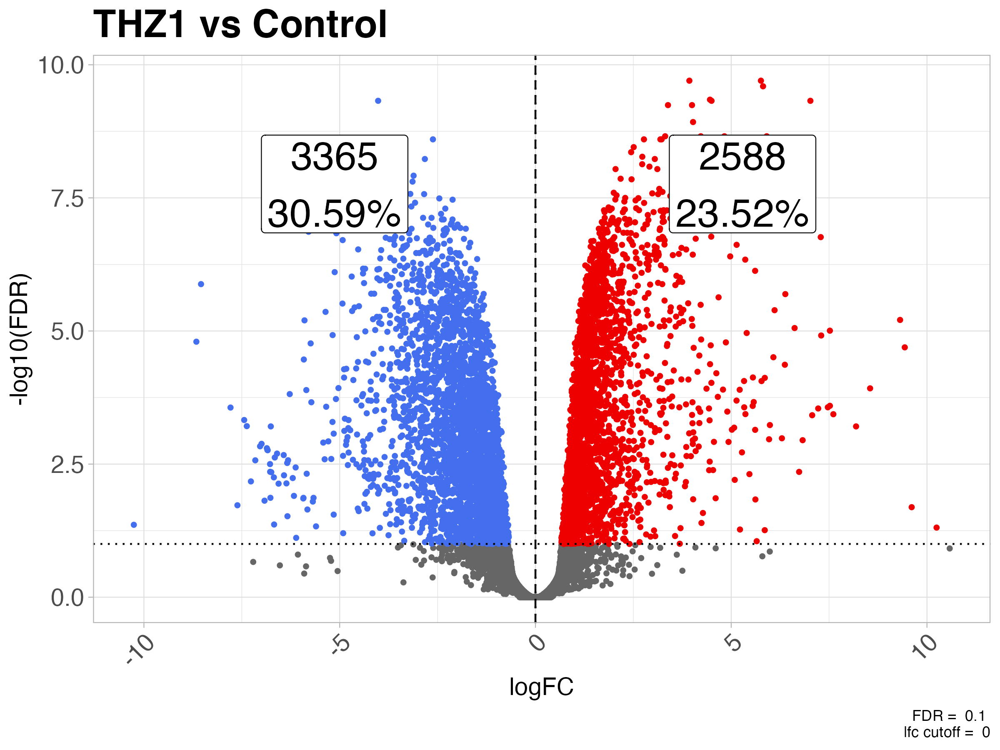
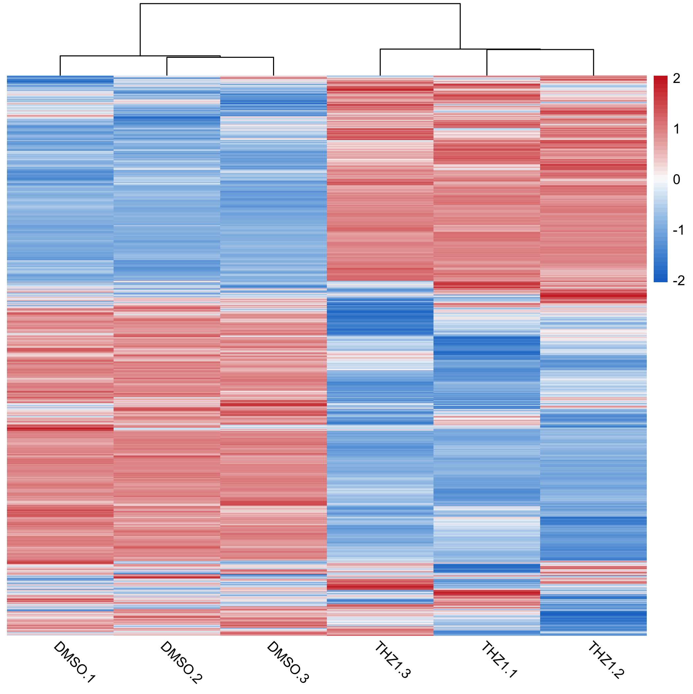

Helper functions for common bioinformatics tasks. If you find yourself reusing old code over and over, let me know and we’ll create a function and put it in this package.
I will be adding tests, however, please test functions and let me know when things are broken by either raising an issue on Github or contacting me.
Installation
Since this package will be constantly changing be sure to install the latest version from Github using:
# Make sure you have devtools installed install.packages("devtools") # Then install using devtools::install_github devtools::install_github("coriell-research/coriell")
Examples
For an overview of how to use some of these functions in a typical analysis check out the RNA-seq vignette (more vignettes to come)
- Correlate methylation data with age
- Create a null distribution of correlations
- Convert edgeR results into tidy dataframes
- Summarize results from differential expression analysis
- Create volcano plot from differential expression results
- Create md plot from differential expression results
- Heatmap with sensible defaults
- Z-score a dataframe
- Convert a list of sets into a binary matrix
- Get statistics for all pairwise combinations of a list of sets
- Perform Gene Ontology Analysis with PANTHER
Perform correlation permutation test using multiple cores
Note: if the number of possible permutations of your data is less than the desired number of permutations given by the parameter n_perm then an exact test on all of the real permutations will be performed instead of random sampling. For example, if you only have 6 samples (720 possible permutations) but set n_perm = 1000 only 720 permutations (i.e. the exact test) will be tested. The permutation_correlation_test function will display a message if this occurs.
library(coriell)
library(methylKit)
# define age dataframe -- ages matching column order
ages = data.frame(age = c(30, 80, 34, 30, 80, 40, 35, 80))
# simulate a methylation dataset
sim_meth <- dataSim(
replicates = 8,
sites = 1000,
treatment = c(rep(1, 4), rep(0, 4)),
covariates = ages,
sample.ids = c(paste0("test", 1:4), paste0("ctrl", 1:4))
)
# extract the methylation as percentages and coerce to data.frame
perc_meth <- as.data.frame(percMethylation(sim_meth))
head(perc_meth)
> test1 test2 test3 test4 ctrl1 ctrl2 ctrl3 ctrl4
> 1 48.14815 54.05405 45.45455 57.89474 32.46753 24.418605 4.687500 30.769231
> 2 0.00000 0.00000 0.00000 0.00000 0.00000 0.000000 0.000000 0.000000
> 3 38.20598 16.34615 12.50000 60.00000 25.42373 3.636364 18.421053 32.335329
> 4 100.00000 100.00000 100.00000 100.00000 86.15385 72.340426 86.666667 100.000000
> 5 0.00000 0.00000 0.00000 0.00000 0.00000 0.000000 0.000000 10.526316
> 6 26.98413 12.63158 23.07692 10.00000 22.22222 0.000000 3.174603 4.166667
# permutation testing -----------------------------------------------------------
# perform permutation testing using 4 cores and 10000 permutations
res <- permutation_correlation_test(perc_meth,
y = ages$age,
n_cores = 4,
n_perm = 10000,
cor_method = "spearman",
p_adjust_method = "fdr")
head(res)
> test1 test2 test3 test4 ctrl1 ctrl2 ctrl3 ctrl4 spearman empirical_p fdr
> 1 48.14815 54.05405 45.45455 57.89474 32.46753 24.418605 4.687500 30.769231 -0.3437200 0.1925 0.4812073
> 2 0.00000 0.00000 0.00000 0.00000 0.00000 0.000000 0.000000 0.000000 NA NA NA
> 3 38.20598 16.34615 12.50000 60.00000 25.42373 3.636364 18.421053 32.335329 -0.3559957 0.1903 0.4812073
> 4 100.00000 100.00000 100.00000 100.00000 86.15385 72.340426 86.666667 100.000000 -0.3093992 0.2195 0.4812073
> 5 0.00000 0.00000 0.00000 0.00000 0.00000 0.000000 0.000000 10.526316 0.4252433 0.3769 0.4812073
> 6 26.98413 12.63158 23.07692 10.00000 22.22222 0.000000 3.174603 4.166667 -0.2946172 0.2334 0.4812073Extract random correlations from a data.frame
# using the same perc_meth data.frame and ages as defined above # get 1,000,000 random correlations from the dataset cors <- sample_n_random_cor(df = perc_meth, y = ages$age, n = 1000000, cor_method = "spearman") # simple histogram of correlation values -- drop NAs if present hist(cors[!is.na(cors)])
Convert edgeR results into a tidy dataframe
library(edgeR)
library(coriell)
# simulate expression data using coriell::simulate_counts()
x <- simulate_counts()
# run edger pipeline
group <- factor(rep(c("ctl", "trt"), each = 3))
y <- DGEList(counts = x$table, group = group)
y <- calcNormFactors(y)
design <- model.matrix(~group)
y <- estimateDisp(y, design)
# To perform quasi-likelihood F-tests
fit <- glmQLFit(y, design)
qlf <- glmQLFTest(fit, coef = 2)
# -----------------------------------------------------------------------------
# convert to tidy dataframe
res_df <- edger_to_df(qlf, fdr = 1, lfc = 0)
head(res_df)
> # A tibble: 6 x 6
> feature_id logFC unshrunk.logFC logCPM PValue FDR
> <chr> <dbl> <dbl> <dbl> <dbl> <dbl>
> 1 gene.51 -4.43 -4.43 6.37 2.93e-10 0.00000561
> 2 gene.26 -6.63 -6.68 3.45 8.37e-9 0.0000801
> 3 gene.19 -7.01 -7.05 3.41 1.51e-8 0.0000962
> 4 gene.100 -4.62 -4.63 4.40 3.24e-8 0.000132
> 5 gene.74 -6.05 -6.07 7.04 4.06e-8 0.000132
> 6 gene.53 -4.67 -4.68 3.91 4.14e-8 0.000132 Summarize results from differential expression test
Return a table of up/down/non-de counts and their percentages.
# for edgeR results default values can be used
res_df <- edger_to_df(qlf)
summarize_dge(res_df, fdr = 0.05)
> # A tibble: 3 x 3
> dge n perc
> <fct> <int> <dbl>
> 1 up 162 0.847
> 2 down 266 1.39
> 3 non-dge 18709 97.8
# For DESeq2 results you must specify the column names
summarize_dge(deseq_res_df,
fdr_col = padj,
lfc_col = log2FoldChange,
fdr = 0.05)Create volcano plot from differential expression results
# For edgeR results default values can be used plot_volcano(res_df) + ggtitle("Treatment vs Control") # For DESeq2 results you must specify the column names plot_volcano(deseq_res_df, x = log2FoldChange, y = padj)

Different significance levels can be used to filter the plotted points. For example, significance levels can be set by specifying the fdr and lfc values.
plot_volcano(res_df, fdr = 0.01, lfc = log2(2)) + ggtitle("Treatment vs Control")

Labels for the counts will be displayed by default. To remove them set annotate_counts = FALSE
plot_volcano(res_df, fdr = 0.01, lfc = log2(2), annotate_counts = FALSE) + ggtitle("Treatment vs Control")

Positions of the count labels can be adjusted by setting the xmax_label_offset, xmin_label_offset and ymax_label_offset values. Setting the values closer to 1 moves the labels away from the origin. xmax_label_offset controls the ‘up’ gene label whereas xmin_label_offset controls the ‘down’ genes label. ymax_label_offset controls the vertical position of the labels.
plot_volcano(res_df, fdr = 0.01, lfc = log2(2), xmax_label_offset = 0.2, xmin_label_offset = 0.7, ymax_label_offset = 0.9) + ggtitle("Treatment vs Control")

Text labels can also be added for the DE genes by setting label_sig = TRUE. Caution, if there are many DE genes this will be overplotted
plot_volcano(res_df, fdr = 1e-4, lfc = log2(2), annotate_counts = FALSE, label_sig = TRUE) + ggtitle("Treatment vs Control")

Create md plot from differential expression results
# For edgeR results default values can be used plot_md(res_df) + ggtitle("Treatment vs Control") # For DESeq2 results you must specify the column names plot_md(deseq_res_df, x = baseMean, y = log2FoldChange, sig_col = padj)

Different significance levels can be used to filter the plotted points. For example, significance levels can be set by specifying the fdr and lfc values.

Labels for the counts will be displayed by default. To remove them set annotate_counts = FALSE
plot_md(res_df, fdr = 0.01, lfc = log2(2), annotate_counts = FALSE) + ggtitle("Treatment vs Control")
Positions of the count labels can be adjusted by setting the xmax_label_offset, ymin_label_offset and ymax_label_offset values. Setting the values closer to 1 moves the labels away from the origin. xmax_label_offset controls the horizontal position of the labels. ymin_label_offset controls the ‘down’ gene label. ymax_label_offset controls the ‘up’ genes label.
plot_md(res_df, fdr = 0.01, lfc = log2(2), xmax_label_offset = 0.6, ymin_label_offset = 0.25, ymax_label_offset = 0.25) + ggtitle("Treatment vs Control")

Heatmap with sensible defaults
We often use the same settings when making calls to pheatmap. This function is a wrapper around pheatmap which uses sensible default values for expression data. It changes the default color scale to a diverging blue to white to red scale, modifies the clustering parameters (row-wise euclidean, col-wise correlation) and clustering method (complete), angles the column labels, removes border colors and rownames.
Any of these options can be overridden by simply supplying the arguments to quickmap as you would pheatmap. This also allows for additional arguments to be passed to the quickmap function for creating row and column annotations.
# generate some example data and log-scale it lcpms <- coriell::simulate_counts(n = 1000)$table %>% log1p() # plot a heatmap of the logCPM values quickmap(lcpms)

Other pheatmap arguments can be passed to the quickmap function as well.
# create annotation for columns col_df <- data.frame(treatment = rep(c("ctl", "trt"), each = 3)) rownames(col_df) <- colnames(lcpms) # create color scheme for treatment conditions ann_colors = list(treatment = c("ctl" = "steelblue", "trt" = "firebrick")) # plot the heatmap, passing additional args to pheatmap quickmap(lcpms, annotation_col = col_df, annotation_colors = ann_colors, main = "Treatment vs Control")

There are two default color scales included which can be specified by setting the diverging_palette argument. By default diverging_palette = TRUE which sets the color scale the same as the above heatmaps. This is useful for scaled data. However, if you are plotting unscaled data such as normalized expression values then a continuous color palette is more appropriate. Setting diverging_palette = FALSE will set the color palette to a continuous (viridis::magma(50)) palette.
# NOTE: different lcpms data than above quickmap(lcpms, diverging_palette = FALSE, scale = "none")

Z-score a dataframe
Z-score a dataframe by row or column
# create some example data
cpms <- data.frame(a = runif(100, min = 0, max = 100),
b = runif(100, min = 0, max = 100),
c = runif(100, min = 0, max = 100),
d = runif(100, min = 0, max = 100))
> head(cpms)
> a b c d
> 1 93.586737 41.79316 58.59588 73.082215
> 2 70.009822 25.84383 57.03569 40.512135
> 3 60.053908 14.68176 82.66302 60.842900
> 4 95.711441 86.76281 58.07523 22.571323
> 5 2.833631 25.04612 72.85270 5.417795
> 6 24.596068 85.46398 16.12987 33.810050
# scale the data by rows
cpms_st <- zscore_df(cpms)
> head(cpms_st)
> a b c d
> 1 1.2201846 -1.13598436 -0.3716029 0.2874026
> 2 1.1247307 -1.16871823 0.4510108 -0.4070232
> 3 0.1922442 -1.39554374 0.9834448 0.2198548
> 4 0.9076295 0.63627273 -0.2336442 -1.3102580
> 5 -0.7309118 -0.04598875 1.4281295 -0.6512290
> 6 -0.4943903 1.45917080 -0.7661138 -0.1986667
# default is to scale by row, scaling by columns can also be performed by
# setting the by = "column"
cpms_st_by_col <- zscore_df(cpms, by = "column")Convert a list of sets into a binary matrix
This function is useful for comparing if a given gene is present across all or a certain proportion of conditions.
Get statistics for all pairwise combinations of a list of sets
Compare every set to every other set and return statistics about their intersections.
Statistics are returned in a list object. The returned list contains a named vector of the statistic computed. The names of the vectore indicate the pairwise comparison, i.e. “Set A : Set B” for all combinations of sets. Use ?pairwise_intersection_stats() for more information about the statistics computed.
sets <- list("set1" = letters[1:4],
"set2" = letters[3:8],
"set3" = letters[1:5],
"set4" = letters[4:6])
# get the intersection stats -- returns a list of statistics
stats <- pairwise_intersection_stats(sets)
# individual statistics can be accessed with subsetting the list
# to get the intersection sizes of every combination of sets:
stats$intersection_size
> set1 : set2 set1 : set3 set1 : set4 set2 : set3 set2 : set4 set3 : set4
> 2 4 1 3 3 2Perform Gene Ontology Analysis with PANTHER
This function sends a request to the PANTHER REST API for GO over-representation analysis on the user specified vector of genes. The API should accept Ensembl gene identifiers, Ensembl protein identifiers, Ensembl transcript identifiers, Entrez gene ids, gene symbols, NCBI GIs, HGNC Ids, International protein index ids, NCBI UniGene ids, UniProt accessions and UniProt ids. The function will return a tibble of the GO results for the user specified organism, annotation dataset, test type and test correction method.
NOTE: the organism parameter is given by the Entrez Taxon ID. Typical values for this parameter are “9606” for HUMAN, “10090” for MOUSE, “10116” for RAT. Any other Taxon ID could also be used. see ?coriell::panther_go for more information.
genes <- c("CTNNB1", "ADAM17", "AXIN1", "AXIN2", "CCND2", "CSNK1E", "CTNNB1",
"CUL1", "DKK1", "DKK4", "DLL1", "DVL2", "FRAT1", "FZD1", "FZD8",
"GNAI1", "HDAC11", "HDAC2", "HDAC5", "HEY1", "HEY2", "JAG1",
"JAG2", "KAT2A", "LEF1", "MAML1", "MYC", "NCOR2", "NCSTN",
"NKD1", "NOTCH1", "NOTCH4", "NUMB", "PPARD", "PSEN2", "PTCH1",
"RBPJ", "SKP2", "TCF7", "TP53", "WNT1", "WNT5B", "WNT6")
go_results <- coriell::panther_go(
genes,
organism = "9606",
annot_dataset = "biological_process")
head(go_results, n = 10)
> result_number number_in_list fold_enrichment fdr expected number_in_reference pValue plus_minus GO_term description
> <chr> <int> <dbl> <dbl> <dbl> <int> <dbl> <chr> <chr> <chr>
> 1 32 6.29 3.63e-17 5.09 2525 2.28e-21 + GO:0007166 cell surface receptor signaling pathway
> 2 24 10.6 5.46e-16 2.27 1129 6.87e-20 + GO:0060429 epithelium development
> 3 17 24.3 8.23e-16 0.701 348 1.55e-19 + GO:0198738 cell-cell signaling by wnt
> 4 17 24.3 6.18e-16 0.701 348 1.55e-19 + GO:0016055 Wnt signaling pathway
> 5 34 4.72 9.14e-16 7.20 3576 2.87e-19 + GO:0010646 regulation of cell communication
> 6 33 5.00 9.16e-16 6.60 3277 3.46e-19 + GO:0048513 animal organ development
> 7 19 17.0 9.19e-16 1.12 555 4.04e-19 + GO:0048729 tissue morphogenesis
> 8 34 4.67 8.11e-16 7.28 3615 4.08e-19 + GO:0023051 regulation of signaling
> 9 12 70.9 7.58e-16 0.169 84 4.29e-19 + GO:0060070 canonical Wnt signaling pathway
> 10 13 52.5 7.24e-16 0.248 123 4.55e-19 + GO:0007219 Notch signaling pathway
# using ensembl ids ------------------------------------------------------------
# all unique ensembl IDs for the above gene set
ensembl_ids <- c("ENSG00000162736", "ENSG00000143801", "ENSG00000177283",
"ENSG00000107984", "ENSG00000165879", "ENSG00000111186",
"ENSG00000118971", "ENSG00000125084", "ENSG00000196498",
"ENSG00000133961", "ENSG00000103126", "ENSG00000004975",
"ENSG00000141510", "ENSG00000108840", "ENSG00000168646",
"ENSG00000151694", "ENSG00000115596", "ENSG00000101384",
"ENSG00000213923", "ENSG00000163517", "ENSG00000168036",
"ENSG00000138795", "ENSG00000145604", "ENSG00000081059",
"ENSG00000161021", "ENSG00000204301", "ENSG00000112033",
"ENSG00000196591", "ENSG00000135547", "ENSG00000198719",
"ENSG00000127955", "ENSG00000157240", "ENSG00000055130",
"ENSG00000104371", "ENSG00000164683", "ENSG00000136997",
"ENSG00000185920", "ENSG00000148400", "ENSG00000283780",
"ENSG00000275555", "ENSG00000238196", "ENSG00000235396",
"ENSG00000232339", "ENSG00000223355", "ENSG00000206312",
"ENSG00000234876")
ensembl_results <- panther_go(ensembl_ids, "9606", "biological_process")
head(ensembl_results, n = 10)
> result_number number_in_list fold_enrichment fdr expected number_in_reference pValue plus_minus GO_term description
> <chr> <int> <dbl> <dbl> <dbl> <int> <dbl> <chr> <chr> <chr>
> 1 12 78.4 1.70e-15 0.153 84 1.07e-19 + GO:00600… canonical Wnt signaling pathway
> 2 29 6.30 1.25e-15 4.60 2525 1.57e-19 + GO:00071… cell surface receptor signaling pathway
> 3 16 25.2 4.33e-15 0.634 348 8.17e-19 + GO:01987… cell-cell signaling by wnt
> 4 16 25.2 3.25e-15 0.634 348 8.17e-19 + GO:00160… Wnt signaling pathway
> 5 16 20.9 4.76e-14 0.767 421 1.50e-17 + GO:19051… cell surface receptor signaling pathway involved in cell-…
> 6 21 10.2 9.38e-14 2.06 1129 3.54e-17 + GO:00604… epithelium development
> 7 29 5.01 1.92e-13 5.78 3174 8.46e-17 + GO:00099… regulation of signal transduction
> 8 30 4.60 2.68e-13 6.52 3576 1.35e-16 + GO:00106… regulation of cell communication
> 9 30 4.55 3.23e-13 6.59 3615 1.83e-16 + GO:00230… regulation of signaling
> 10 29 4.86 3.22e-13 5.97 3277 2.02e-16 + GO:00485… animal organ development
# using mouse genes ------------------------------------------------------------
mouse_genes <- c("Adam17", "Axin1", "Axin2", "Ccnd2", "Csnk1e", "Ctnnb1",
"Cul1", "Dkk1", "Dkk4", "Dll1", "Dvl2", "Frat1", "Fzd1",
"Fzd8", "Gnai1", "Hdac11", "Hdac2", "Hdac5", "Hey1", "Hey2",
"Jag1", "Lef1", "Maml1", "Myc", "Ncor2", "Ncstn", "Notch1",
"Notch4", "Numb", "Ppard", "Psen2", "Ptch1", "Skp2", "Tcf7",
"Wnt1", "Wnt5b", "Wnt6")
mouse_results <- panther_go(
mouse_genes,
organism = "10090",
annot_dataset = "biological_process")
head(mouse_results, n = 10)
> result_number number_in_list fold_enrichment fdr expected number_in_reference pValue plus_minus GO_term description
> <chr> <int> <dbl> <dbl> <dbl> <int> <dbl> <chr> <chr> <chr>
> 1 13 97.8 2.50e-18 0.133 80 1.58e-22 + GO:0060070 canonical Wnt signaling pathway
> 2 16 40.5 4.10e-18 0.396 238 5.18e-22 + GO:0198738 cell-cell signaling by wnt
> 3 16 40.5 2.73e-18 0.396 238 5.18e-22 + GO:0016055 Wnt signaling pathway
> 4 23 13.3 3.77e-18 1.72 1037 9.53e-22 + GO:0060429 epithelium development
> 5 27 8.52 8.41e-18 3.17 1907 2.66e-21 + GO:0007166 cell surface receptor signaling pathway
> 6 16 33.0 3.10e-17 0.485 292 1.18e-20 + GO:1905114 cell surface receptor signaling pathway involved in cell-cell s…
> 7 25 9.04 1.39e-16 2.77 1664 6.17e-20 + GO:0009888 tissue development
> 8 27 7.21 3.95e-16 3.75 2254 2.00e-19 + GO:0009653 anatomical structure morphogenesis
> 9 29 6.06 4.50e-16 4.78 2878 2.56e-19 + GO:0009966 regulation of signal transduction
> 10 21 12.3 1.04e-15 1.71 1026 6.57e-19 + GO:0009887 animal organ morphogenesis